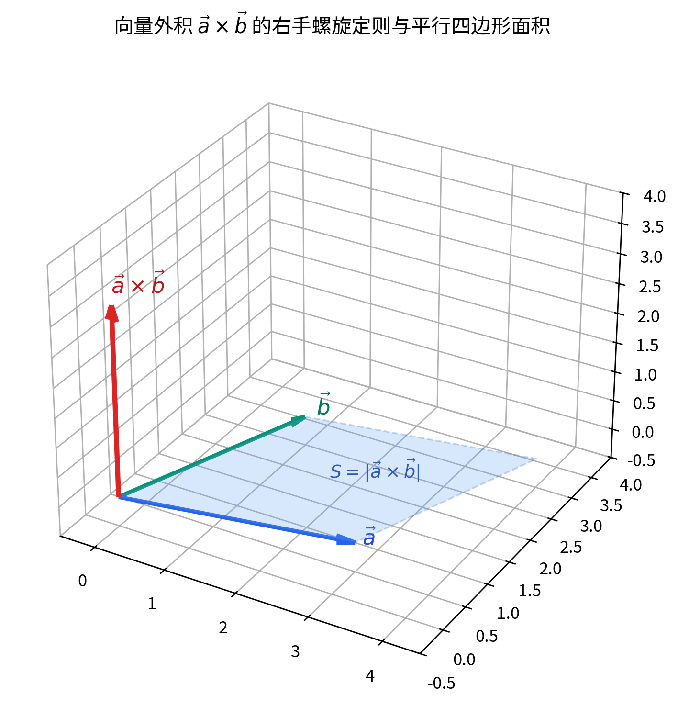

00:06:40—00:16:04 ｜
点绕定直线旋转问题及其向量公式
把上面的正交基想法用到一类具体问题：已知点
、一条过
的直线
，直线外一点
，把
绕这条直线旋转一个角度
得到点
。问：如何用
与
把
表示出来？
老师强调：所谓”绕这条直线旋转”，必须理解为”绕这条直线的垂直平面内旋转”——只有垂直于轴的平面里的旋转才是标准的旋转；若在一个任意斜面里转，角度会随轴上点的上下移动而改变，那不是标准旋转。[按图还原]
例题/证明
1（00:00:13）｜ 由
构造正交基
命题／任务：已知
为互相正交的单位向量，构造
使
构成右手正交基。
思路：叉乘天然给出一个与两个因子都正交、长度等于两因子长度之积的向量；当两因子是单位长度且正交时，叉乘结果恰是单位向量，正好补成第三基。
逐步推导（课堂口述为半句”
由
与
表示、长度等于
“，以下按标准补全并标
[补全]，非当堂逐字所讲）： 1. 取
。
2.
正交性：，，故
与
都正交。 3.
长度：。
4. 右手系：按构造
，满足右手规则。
结论：，三向量构成右手正交基。
易错点：叉乘的顺序决定方向，；右手系与左手系仅差一个符号。
例题/证明
2（00:06:40）｜ 点绕定直线旋转所得的向量公式
命题／任务：已知过原点
的直线
，其单位方向
；直线外一点
，把
绕该直线旋转角
到
。求
用
表示的公式。[按图还原]
思路：把旋转问题”降维”到垂直平面内。过
作垂直于
的平面，得垂足
；
沿轴方向的分量（即
）在旋转中不动，只有垂直于轴的分量在垂面内旋转。这恰好化归为上一节”正交基下把
绕
旋转”的情形。
逐步推导（[按图还原] 已知：直线
、直线外点
、旋转后点
、垂足
；不引入图上没有的点线）：
1. 作单位方向
。
2. 把
分解为沿轴分量与垂直分量：
其中
，且
。
3. 旋转时沿轴分量不变，垂直分量在垂面内转过
：
4. 因
，得到闭合形式（以下装配为常规写法的完整公式，标
[补全]）：
结论：绕过原点、单位方向为
的轴旋转角
的向量公式为
当
已垂直于轴时，第一项消失，退化为
，即上一节
的构造。
易错点：必须先把向量投到轴方向与垂直方向，不能直接拿
整体乘
；旋转角
是绕”垂直平面”度量的标准角，在一个斜平面里转不是标准旋转。
二、叉乘的坐标公式与行列式表示（00:16:04—00:26:36）
00:16:04—00:18:13 ｜
为什么叉乘坐标公式只在正交标架下简单
老师先点明一个方法论问题：在仿射坐标下做叉乘，表达式会非常复杂、几乎算不清；只有在直角坐标系（正交标架）下，叉乘才干净漂亮。原因是叉乘本身依赖”垂直”的概念，而仿射坐标里只有平行、没有垂直——垂直是欧氏几何里才有的结构。所以本节所有坐标公式都默认建立在右手直角坐标系
之下。
00:18:13—00:23:34 ｜ 叉乘在
下的坐标展开
设
利用右手正交基的乘法表
逐项相乘并合并同类项，得到坐标公式。
00:23:34—00:26:36 ｜
用行列式按第一行展开写叉乘
上面的九项结果可以整齐地写成一个三阶行列式，按第一行展开来记。展开规则是”某元素乘上划去其所在行、列后留下的二阶行列式，再带上符号
“。
例题/证明
3（00:18:13）｜ 两个向量叉乘的坐标公式
命题：在右手直角坐标系下，求
的坐标。
思路：把两个向量按基展开，用叉乘的双线性与基的乘法表逐项算，再按
整理系数。
逐步推导： 1.
。
2. 交叉项（同名基相乘为
的略去）： -
项：
的逆向整理，实际
系数为
。
-
项：由
与
得系数为
。
-
项：由
与
得系数为
。
3. 合并：
结论：坐标公式如上。
易错点：
的顺序与符号极易写反；务必以右手系
为准，写完后可用
快速检验。
例题/证明
4（00:23:34）｜ 用二阶行列式（余子式）写叉乘
命题：把例 3
的结果写成行列式形式，并说明它的展开规则。
思路：把
放在第一行，两个向量的坐标放在下面两行，按第一行展开；每个基对应的”代数余子式”正好是一个二阶行列式。
逐步推导： 1. 写成
2. 按第一行展开，符号为
：
-
项：
；
-
项：
；
-
项：
。
3. 这正是例 3 的结果。
结论：叉乘可记为上述三阶行列式，按第一行展开即得坐标公式；记忆口诀是”
对应删去第一列后的二阶行列式，依次带上
号”。
易错点：行列式只是记忆工具，第一行是基向量而非数；真正计算时仍按余子式展开，不要把它当成普通数值行列式去求值。
三、混合积（标量三重积）（00:26:36—00:43:43）
00:26:36—00:31:07 ｜ 混合积的定义
先有两种”两个向量的乘积”：叉乘
得到一个向量；再与第三个向量
做点乘，就得到一个数，记作
这是混合积（标量三重积）。记号上把叉乘的括号省去、直接写成
（三个向量并列）也可以，因为后文会证明叉乘放在哪里都不影响这个数。[按图还原]
00:31:07—00:37:25 ｜
混合积的几何意义：平行六面体体积与左右手
几何上，以
为三条棱作平行六面体。
的模长等于以
为邻边的平行四边形面积，方向垂直于该平面（右手系）。再把
投影到这个法向方向上，得到”高”，于是混合积的绝对值就是平行六面体的体积。[按图还原]
符号由
的”手性”决定：构成右手系时混合积为正，构成左手系时为负（绝对值相同，符号相反）。
00:37:25—00:41:57 ｜ 共面判别与轮换性
若三向量共面，则平行六面体被压扁、体积为
，混合积为
；反过来也成立。此外混合积对循环轮换不变，对交换两向量变号。
例题/证明
5（00:29:03）｜ 混合积等于以
为棱的平行六面体有向体积
命题：设
不共面，则
等于以它们为三条棱的平行六面体体积；符号为正当且仅当
构成右手系。
思路：把混合积拆成”底面积 × 高”。底是
张成的平行四边形，高是
在法向上的投影。
逐步推导（[按图还原] 已知：平行六面体三条棱
；不引入图上没有的点线）：
1. 底面积
（叉乘模长
= 平行四边形面积）。 2. 高
是
在法向
方向上的投影长度：。
3. 体积
。
4.
符号：
与
同向（右手系）时
，为
；反向（左手系）时为
。
结论：混合积的绝对值 =
平行六面体体积，符号记录手性。
易错点：共面时体积
、混合积
；不要漏掉绝对值与符号的区别——有向体积才带符号。
例题/证明 6（00:37:48）｜
共面判别定理及其证明
命题：三个向量
共面
。
思路：双向论证。正向用”共面 ⇒
高为零”；反向用”混合积为零 ⇒ 其中两向量平行或三者两两正交矛盾 ⇒
共面”。
逐步推导： 1.
（）若
共面，则
落在
张成的平面内；而
垂直于该平面，故
，于是
。
2.
（）若
，则要么
（即
，显然三者共面），要么
（即
落在
平面内），两者都推出共面。
结论：三向量共面 ⇔
混合积为零。这是判断共面最常用、最简洁的判据。
易错点：混合积为零只说明共面，不说明其中某个为零向量；（两向量平行）也是共面的一种情形，不能忽略。
例题/证明
7（00:40:18）｜ 混合积的轮换不变性与交换反号
命题：；交换任意两个向量位置则变号，如
。
思路：轮换不改变以三向量为棱的平行六面体，故体积与符号都不变；交换两向量把右手系变成左手系（或反之），故变号。
逐步推导： 1.
轮换：
仍张成同一个平行六面体，且手性不变（右手→右手），故混合积相等。 2.
交换：
交换得
，手性翻转，故
。
3. 由此也说明叉乘与点乘的”位置”无关：写成
（并列）完全合法。
结论：混合积在循环轮换下不变，在交换两因子时反号；因此括号和叉乘的位置都可自由移动。
易错点：只有”循环轮换”才保号，任意对换必变号；不要把
与
弄混，后者差一个负号。
四、混合积的坐标表示与向量分解（00:47:33—01:13:05）
00:47:33—00:53:43 ｜ 混合积的坐标行列式
混合积既然依赖叉乘，坐标公式也只在直角坐标系下成立。把
的坐标代入叉乘公式再点乘，可整理成一个三阶行列式，其每行正是一个向量的坐标。
00:53:50—01:02:13
｜ 用混合积求向量在
下的分解系数
设空间中有三个不共面的向量
（即线性无关），则任一向量
可唯一表示为
系数
可由混合积解出，这正是线性代数中克莱姆法则的几何来源。
01:02:13—01:13:05 ｜ 向量三重积与
Schmidt 正交化
当括号里外都是叉乘时，出现”向量三重积”
。它仍是一个向量，且必落在
张成的平面内。为干净地证明它的展开式，需要一种统一地构造正交基的方法——Schmidt（施密特）正交化。
例题/证明 8（00:47:33）｜
混合积的坐标行列式
命题：在右手直角坐标系下，
其中
等为各行。
思路：先用例 3 写出
，再与
点乘；或直接套用叉乘行列式后点乘。
逐步推导： 1. 由例
3，。
2. 与
点乘：
3. 这正是三阶行列式按第一行展开的结果。
结论：混合积等于以三向量坐标为行的行列式；由行列式性质立即可见”轮换三行不变、交换两行变号”，与例
7 一致。
易错点：行顺序对应向量顺序，轮换行不变、对换行变号；不要把三个向量的坐标写成列向量再求行列式（那样要转置，结论一致但易混淆）。
例题/证明
9（00:53:50）｜ 用混合积求解
的系数（克莱姆法则）
命题：已知
不共面，，求
。
思路：在等式两边”同时叉乘”
，利用混合积中
、
消去
，只剩
；同理得
。
逐步推导： 1. 两边点乘
：
2. 因
、
，得
3. 同理，两边点乘
得
；点乘
得
。
4. 分母因轮换不变性三者相等（均为
），且三向量不共面
⇒ 分母
，故系数唯一。
结论：
这恰是线性方程组
的克莱姆法则的几何推导。
易错点：只能在等式两边”点乘”一个与另两向量都正交的叉乘来消元；分母必须非零（即
不共面），否则分解不唯一甚至不存在。
例题/证明
10（01:06:07）｜ Schmidt 正交化构造正交基
命题：给定两个线性无关的向量
，构造一组正交单位向量
，其中
与
都正交。
思路（[按图还原]
已知：
不共线；作法：取
沿
，从
减去其在
上的投影得
方向，再叉乘得
；不引入图上没有的点线）：用”减去在已构造方向上的投影”这一统一办法，逐次造出互相正交的单位向量。
逐步推导： 1.
。
2. 把
减去它在
上的投影，得到与
正交的向量：
再单位化：
。
3.
第三个方向直接叉乘：
（它自然与
都正交）。
结论：
构成右手正交基。此即
Schmidt（施密特）正交化；本课程只需两个就能叉乘出第三个，故老师只构造到
。
易错点：
必须先”减投影”再单位化，不能直接用
；叉乘顺序决定
的正负号（右手系）。
五、向量三重积公式与向量恒等式（01:13:13—01:32:32）
01:13:13—01:21:59
｜ 向量三重积
的展开公式
括号内外都是叉乘时得到向量三重积。它必须是一个向量，且由于它同时垂直于
与
，而
垂直于
平面，故该向量落在
平面内，是
的线性组合。下面用例 10 的正交基方法证明它的确切系数。
01:22:15—01:27:36 ｜ Jacobi
恒等式与 Lagrange 恒等式
从向量三重积公式可以推出两条重要的向量恒等式：Jacobi（雅可比）恒等式与
Lagrange（拉格朗日）恒等式。前者描述”三个叉乘循环和为零”，后者把叉乘模长平方化为点乘的组合。
01:27:59—01:32:32 ｜
标量四重积与课程小结
进一步，两个叉乘再做点乘得到”标量四重积”，可化成两组点乘之差。本节至此把三维欧氏空间中内积、叉乘、混合积之间的主要关系梳理完毕。老师提醒：今天是第五次课，第一章内容基本讲完；向量级（内积、叉乘、混合积）的各种性质，课后可自行系统总结。
例题/证明
11（01:13:49）｜ 向量三重积恒等式
命题：对任意
，
思路：用例 10 的方法在
张成的平面里造右手正交基
，其中
。在该基下把
写出，逐项算叉乘；由于结果与基的选取无关，最终化为
的组合（以下完整代数装配标 [补全]，课堂为思路性推导）。
逐步推导： 1. 取
，
为
平面内与
正交的单位向量，（满足
）。
2.
在此基下：，，。
3. 先算
在
方向与
平面内的分量；再算
，其
分量因
为
，结果只含
。
4. 把
用
回代并整理（[补全] 代数细节），得到系数为
与
：
结论：向量三重积”展开后，外层
点乘内层后两个向量之一，且带符号交替”。
易错点：括号位置不同结果不同——
是
的线性组合，而
是
的线性组合；两者不相等，差为反号修正（见例 12）。
例题/证明 12（01:24:50）｜
Jacobi（雅可比）恒等式
命题：。
思路：对每一项套用例 11
的公式（注意括号在外层时是”“），三项相加后互相抵消。
逐步推导： 1. 由例
11，；而
。
2. 于是： -
；
-
；
-
。
3. 三项相加，每对互为相反数，总和为
。
结论：Jacobi
恒等式成立。它在李代数与力学中非常重要。
易错点：必须先处理外层括号的符号
，否则符号会错；逐项展开后再相加最稳妥。
例题/证明
13（01:26:44）｜ Lagrange（拉格朗日）恒等式
命题：。
思路：把
写成
，对内层用一次向量三重积公式。
逐步推导： 1.
（混合积中叉乘位置可移）。
2. 对
用例 11（取外层
）：
3. 再点乘
：
结论：；由此也立刻得到
。
易错点：这是向量三重积公式的一个特例，很多”面积型”计算都归结为它；注意右边是”模长平方之积减去点乘平方”，不是减去点乘。
例题/证明
14（01:28:03）｜ 标量四重积
命题：。
思路：把
看成一个整体向量，对其与
用混合积思路；或者先用向量三重积把
拆开。
逐步推导（课堂上给出两种等价写法：一种把结果表达为
的线性组合，另一种表达为
的线性组合，以下按标准恒等式补全并标
[补全]，非当堂逐字所讲）： 1. 视
，则
。
2. 对
用例
11：。
3. 点乘
得
，交换书写顺序即
结论：标量四重积等于两组对应点乘之差的行列式：
易错点：结果对
与
各自反称——交换
或交换
都会变号；它把”两个叉乘的点乘”完全转化成了内积运算。

图 1: 向量外积的右手螺旋定则与平行四边形面积